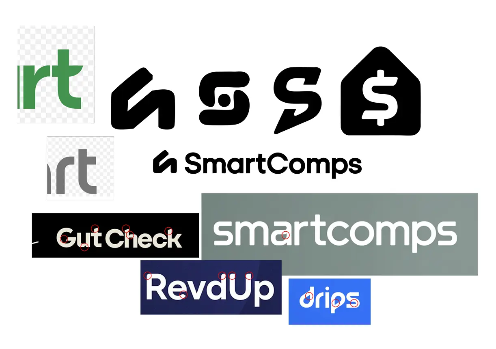
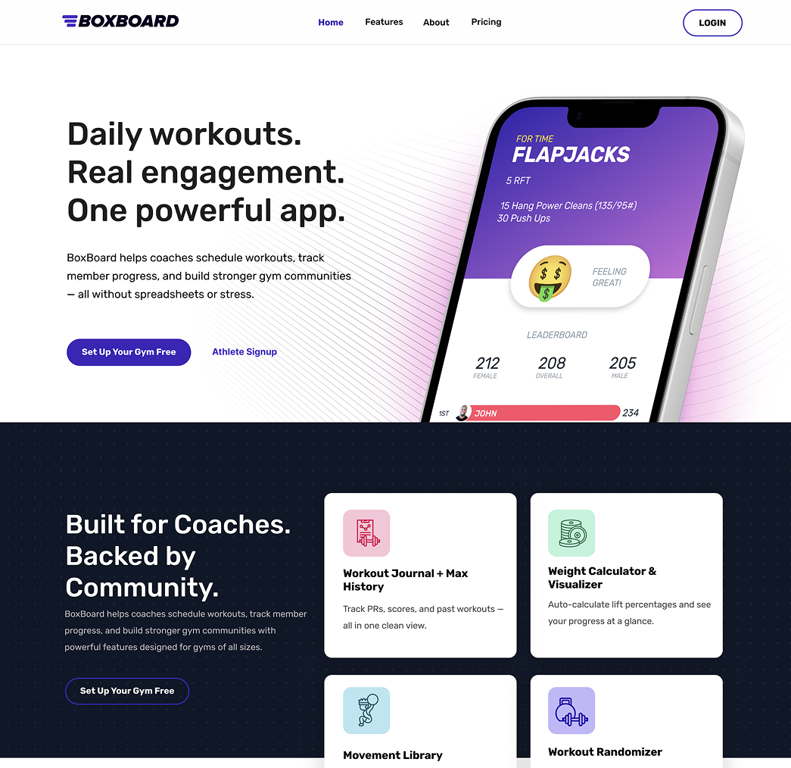
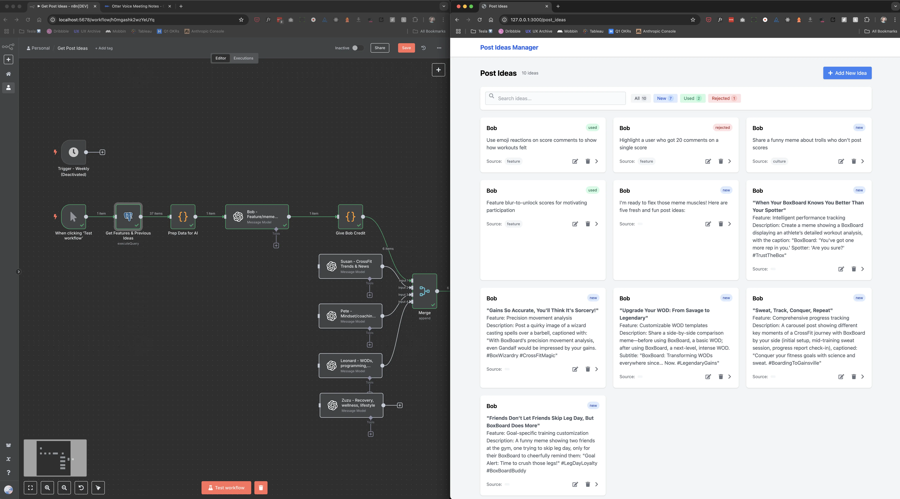
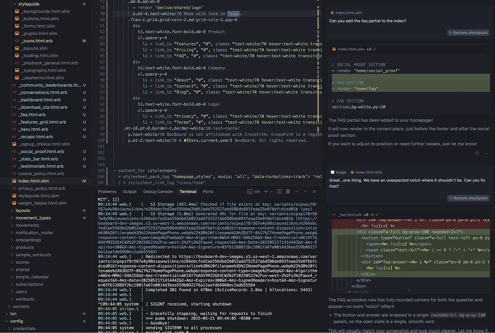

*tl;dr *AI isn’t coming for your job—it’s coming for the version of your job that hasn’t evolved. The people who thrive will wield AI to stretch beyond a single specialty and stitch together value in unexpected ways.
1 Why the “single-lane” career is fading
Early in my career I wore tidy labels—designer, then front-end dev, then UX
leader. That worked when tooling friction kept each craft in its silo.
Today:
- Text-to-image tools draft logos in seconds.
- Code copilots stub features while you sip coffee.
- LLMs brainstorm 100 marketing angles before lunch.
Result: what used to be an expensive hand-off chain is now a solo flight with AI riding shotgun.
2 Four hats, one (busy) week
The outputs below all happened in small pockets of time during the same week. AI handled the grunt work; I played editor-in-chief.
2.1 Logo exploration

Prompt: “Generate abstract logomarks for a real-estate market-comparison app called ‘SmartComps’; style: bold, geometric.”
I iterated on the best mark in Figma, refined curves, and exported variants. Hands-on time: ≈ 25 min.
2.2 Landing-page draft

Workflow:
- Lovable to spark layout & copy ideas.
- Cursor to translate the best concept into React/Tailwind code.
- Quick polish pass for brand tone, then push to a preview branch.
Design and front-end boxes checked in under an hour.
2.3 Marketing-idea factory

My n8n flow:
- Cron trigger (Monday 08:00)
- Postgres
SELECTto avoid duplicates - OpenAI: “Give me 10 *new** social posts for BoxBoard…”*
- Insert rows back into
marketing_ideas - Slack DM the top idea to me
Five nodes = one less weekly chore.
2.4 Code-enhancement sprint

Cursor.ai nudged me through test stubs, edge-case handling, and a small refactor—more output, less keyboard time.
3 Patterns I’m leaning on
| Pattern | Why it works |
|---|---|
| Prompt → Draft → Human polish | AI gets ~80 %; I inject taste & domain nuance. |
| One source of truth (Postgres) | Multiple “agents” read/write without spreadsheet chaos. |
| Componentized thinking | Each task is a Lego brick; future flows can chain them. |
4 From specialist to “Swiss-army-knife” teammate
I’m not abandoning UX leadership; I’m augmenting it. The evolving baseline stack:
- Core craft (design, dev, PM, etc.)
- Prompt literacy (coax the best from LLMs)
- Workflow design (thinking in nodes, triggers, data stores)
- Rapid experimentation mindset (ship → measure → tweak)
Companies will prize people who glide across that spectrum—handoff overhead is now effectively free.
5 Try it yourself
- Pick a dormant skill you haven’t touched in years.
- Draft a micro-project that takes < 1 hr with AI help.
- Ship—even if it’s rough.
- Reflect: What felt slow? Automate that next.
Where could you add value once the boilerplate melts away?
Share a win (or face-plant) in the comments—let’s trade notes. 🚀
Thanks for reading—now go make something weird (with a little help from the machines).